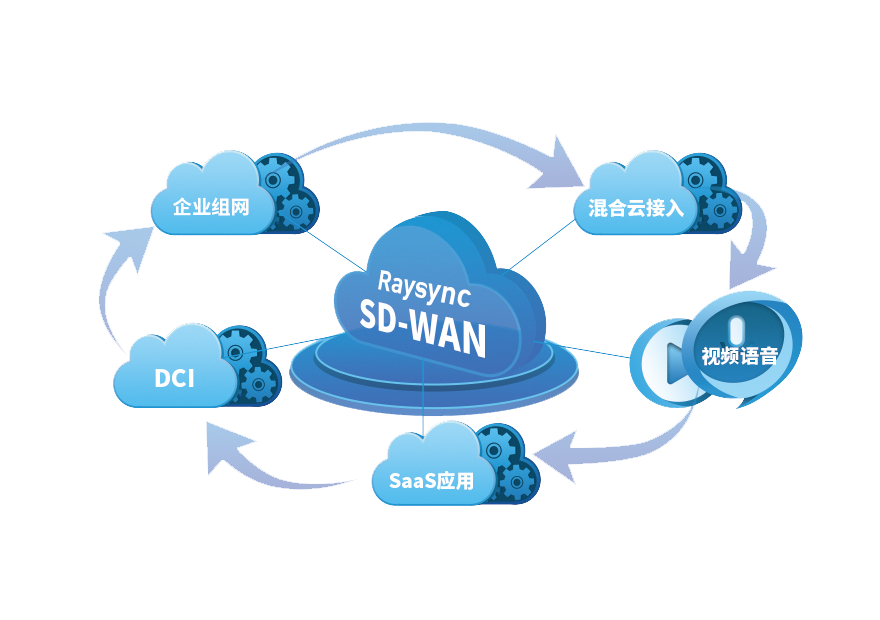
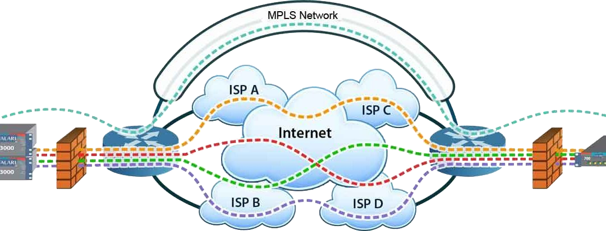

软件定义广域网（sd-wan）
什么是SD-WAN

支持多种连接方式，MPLS，frame relay，LTE，Public Internet等等。
SD-WAN将Virtual WAN与传统WAN结合，在这之上做overlay。对于应用程序来说，不需要清楚底层的WAN连接究竟是什么。在不需要传统WAN的场景下，SD-WAN就是Virtual WAN。
能够在多种连接之间动态选择链路，以达到负载均衡或者资源弹性。
与Virtual WAN类似，动态选择多条路径。SD-WAN如果同时连接了MPLS和Internet，那么可以将一些重要的应用流量，例如VoIP，分流到MPLS，以保证应用的可用性。对于一些对带宽或者稳定性不太敏感的应用流量，例如文件传输，可以分流到Internet上。这样减轻了企业对MPLS的依赖。或者，Internet可以作为MPLS的备份连接，当MPLS出故障了，至少企业的WAN网络不至于也断连。
简单的WAN管理接口。
凡是涉及网络的事物，似乎都存在管理和故障排查较为复杂的问题，WAN也不例外。SD-WAN通常也会提供一个集中的控制器，来管理WAN连接，设置应用流量policy和优先级，监测WAN连接可用性等等。基于集中控制器，可以再提供CLI或者GUI。以达到简化WAN管理和故障排查的目的。
支持VPN，防火墙，网关，WAN优化器等服务。
SD-WAN在WAN连接的基础上，将提供尽可能多的，开放的和基于软件的技术。
基本的SD-WAN的操作就是多条WAN路径的选择规划，如下图所示。
SD-WAN产品
当我们说SDN时，更多是一种针对DC的网络架构。而SD-WAN却是一种可以购买技术产品。与Virtual WAN类似，SD-WAN产品可以是物理的，也可以是虚拟的。在WAN架构中，SD-WAN与WAN edge router放置在一起，用来增强WAN edge router甚至替代WAN edge router。从其放置的位置可以看出，客户所有的WAN流量都会流经SD-WAN。
现实中，各个宣称提供SD-WAN的公司，其产品也不尽相同。主要可以分为两大类，一类是提供SD-WAN设备，可以是专用设备，也可以是现有设备集成了SD-WAN功能，另一类是提供WAN as a Service，自己提供WAN网络的同时，搭配售卖SD-WAN设备。
Aryaka通过与各个SP合作，自己构建了一个全球范围的WAN。Aryaka的WAN在全球有26个接入点。据称，对于世界上95%的企业来说，都可以找到小于30毫秒的延时的接入点。企业用户需要通过Internet接入到Aryaka的接入点，之后数据就跑在Aryaka的骨干网上。Aryaka相当于对WAN做了虚拟化，在这之上虚拟出了多个私有WAN，供用户使用。Aryaka的SD-WAN设备用来连接用户网络和其接入点。这种方式，部署简单，传统的MPLS部署可能需要几个月，而现在几个小时就可以了。成本上也能大大降低，Aryaka的产品比较同等的MPLS，节约了超过50%的成本。

SD-WAN相关的技术
Hybrid WAN
Hybrid WAN是指采用同时采用多种WAN连接，通常就是私有MPLS连接和Internet连接。企业通过Hybrid WAN技术，可以将一些应用流量分流到Internet连接上来。毕竟，私有MPLS连接成本不低。从这点看，Hybrid WAN与前面描述的SD-WAN非常接近。实际InfoVista将hybrid WAN看作是SD-WAN的前身。不过Hybrid WAN只是强调同时使用多条WAN连接，SD-WAN在这之上加上了software-defined的概念，这包括了集中控制，智能分析和动态创建网络服务等。Hybrid WAN仍然占据了WAN市场较大一部分，当用户需要升级或者需要更灵活的WAN连接管理时，SD-WAN会是一个不错的替代。
WAN Optimization
WAN Optimization是指提高数据在WAN上传输效率的技术的集合。SD-WAN关注的是使用低成本线路，以达到高性能线路传输效果。而WAN Optimization关注的是网络数据包如何更有效的在已有线路上传输。在实际中，SD-WAN可以配合WAN Optimization使用。在SD-WAN场景下，WAN Optimization通常是以虚拟的形式存在。
WAN edge router
SD-WAN实际上能增强WAN edge router甚至取而代之。传统的网络厂商一般是在自己的WAN edge device（路由器，NGFW）里集成SD-WAN功能，而新兴的SD-WAN创业公司，更倾向于专有的SD-WAN设备，或者虚拟的SD-WAN产品，来配合WAN edge router。
MPLS
SD-WAN的倡导者通常会宣称SD-WAN是用来替代MPLS的。不过，只要对网络流量可靠的QoS还有需要，那么MPLS或者其他的传统WAN连接技术仍然是不能替代。现实中，SD-WAN厂商通常会建议MPLS和Virtual WAN一起部署。对于高优先级流量，仍然走MPLS。从技术的角度来看，MPLS，可以通过Traffic Engineering完全控制骨干网网络流量。而SD-WAN，其所有的控制都是在网络边缘。网络对于SD-WAN来说就是个黑盒子。所以总的来说，SD-WAN可以减轻企业对MPLS的依赖，但是不能完全消除MPLS。
NFV
SD-WAN产品需要支持基于软件的VPN，防火墙，WAN Optimization等。这可以在SD-WAN上实现，也可以通过NFV技术向SD-WAN添加相应的VNF来实现。NFV和SD-WAN都是虚拟网络服务，两者并不互斥，可以配合工作。
SDN
与SDN的联系更多是概念上。前面已经提过了SD-WAN与SDN的区别。通过对260个样本调查发现，29%的用户正在研究SD-WAN，而已经有5%的用户在使用SD-WAN。相比之下，77%的用户在研究SDN，只有13%在使用。SD-WAN的先驱使用者是零售商和金融机构，他们都有大量的分支机构。SDN是对现有网络架构的更新，虽然说SDN架构优势明显，但是应用到实际中，因为企业现有网络架构在还能用之前，没人会提出更换成SDN架构，企业不会承担相应的成本和风险。而SD-WAN，最直接的效应就是减少企业在WAN上的投入，特别是分支机构较多的企业。设计到钱的问题的时候，总是比涉及技术更容易在企业推广。并且SD-WAN是增量变化，企业有时可以在原有WAN架构的基础上新增SD-WAN功能。因此，普遍认为SD-WAN的发展速度会更快。